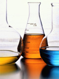

奥格内森
自主研发生产的石油化工行业用脱硫剂、脱氯剂、脱砷剂
北京奥格内森化学技术有限公司自主研发，生产，用于石油化工行业的
瓦克有机硅产品是许多拥有特别性能材料的重要组成部分
这些材料应用范围广泛，在汽车、建筑、化学品、电气工程和电子工业、纸浆和造纸、化妆、纺织、皮革、纤维等多个领域。
多年来我公司凭前瞻的市场理念、依托瓦克公司雄厚的技术实力、先进的工艺设备、优质的销售服务，市场占有率迅速提高，深受客户好评。
我们知道，客户是我们事业上的伙伴，只有与客户建立长期稳定的合作关系，才能使大家都受益。因此，我们强调与客户共同探讨、交流是解决客户技术难题的最好方法。所以我们随时愿为遭遇泡沫难题的客户提供解决方案并免费提供技术服务。我们不仅仅只是推销产品! 针对中国市场客户的需求，我们开发并提供基于创新性专用化学品的产品、解决方案、生产工艺、应用技术和服务。
我们承诺:将以最优的国际产品、最快的专业服务、最优惠的国内价格，竭诚为各界新老客户服务。我们坚持:重视交流、精诚合作、互利互惠、共创辉煌!
About 奥格内森
“关注客户”是我们的唯一宗旨，公司执行“以技术服务为指导”的销售策略，可根据客户对消泡剂的不同需求“度身定做”；对客户的疑难，可提供令其满意的技术指导和服务；并为推广新产品提供技术支持。
“关注质量”是我们永恒的课题，瓦克有机硅是提供从产品、服务到理念的全球主要的有机硅解决方案的供应商。作为解决方案的提供者，帮助客户推进革新、开拓全球市场并优化业务流程以降低综合成本、提高生产力。
“关注创新”是我们与时俱进的动力，始终保持着国际领先的竞争优势。
公司地址：北京市通州区北苑155号 大唐科技园 2-11
邮编：101101
联系人：张小姐
电话：010-61591949 13501205231
邮件：zhangjie@bjagns.com